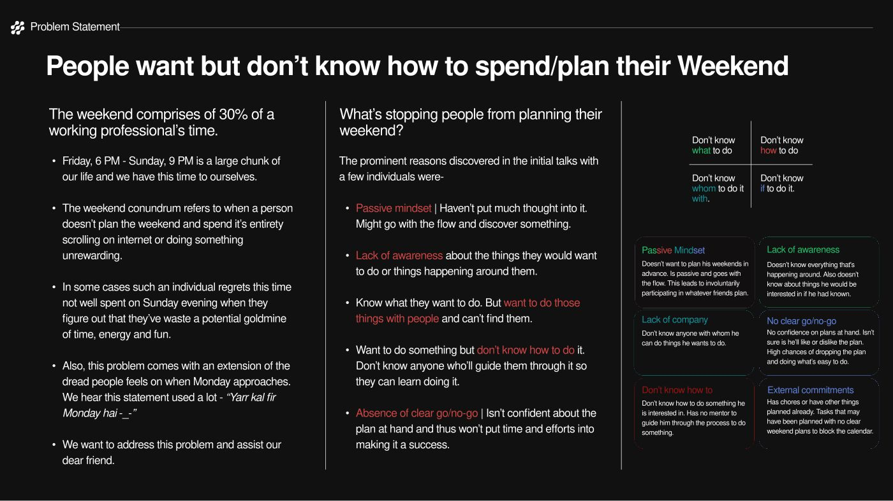
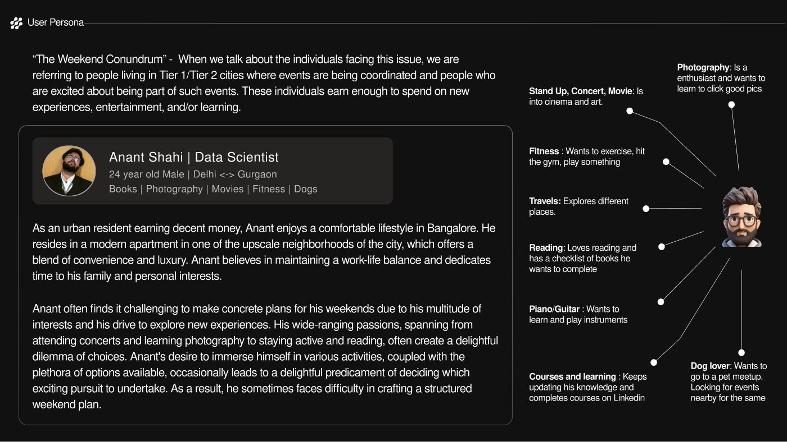
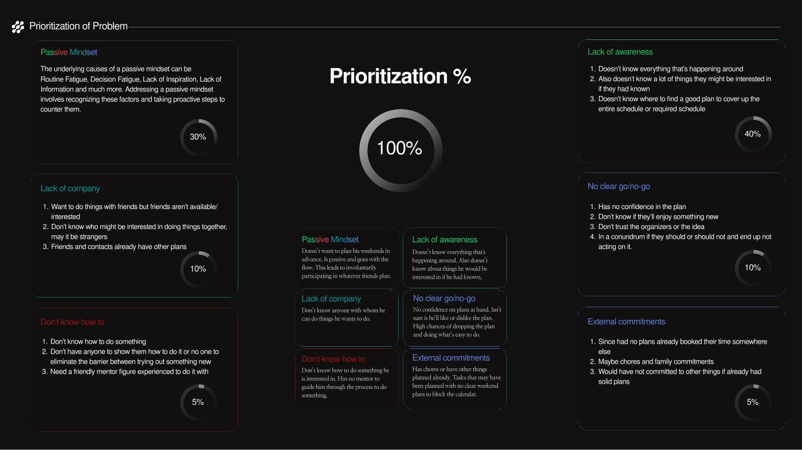
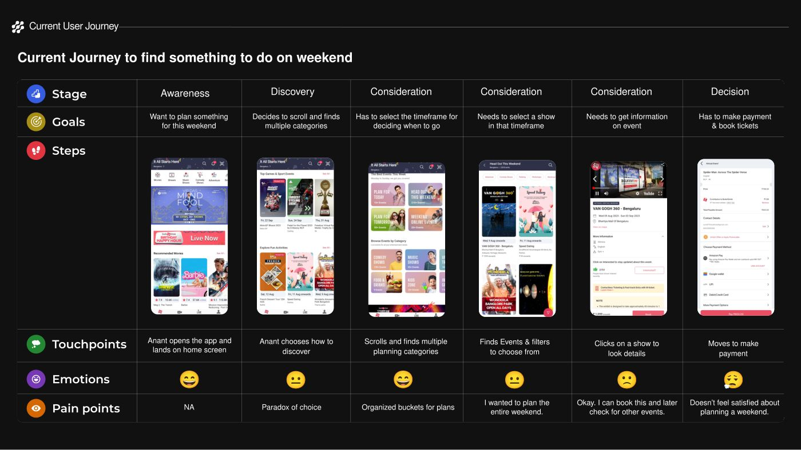
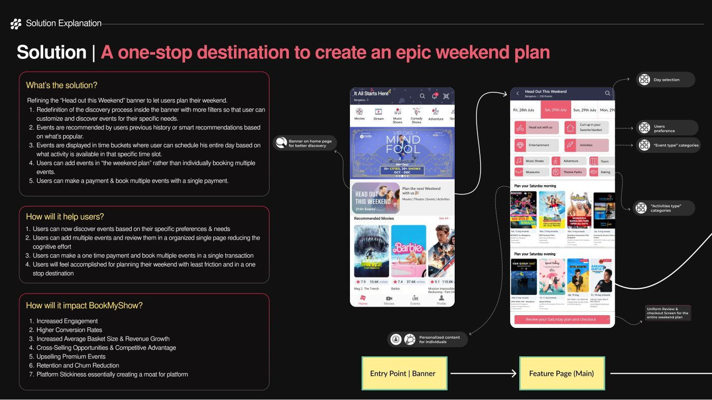
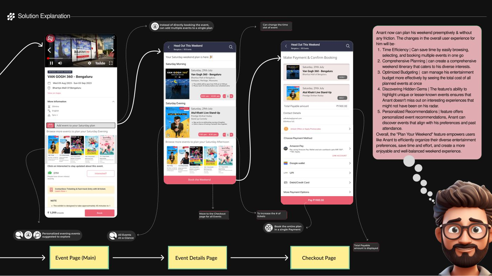
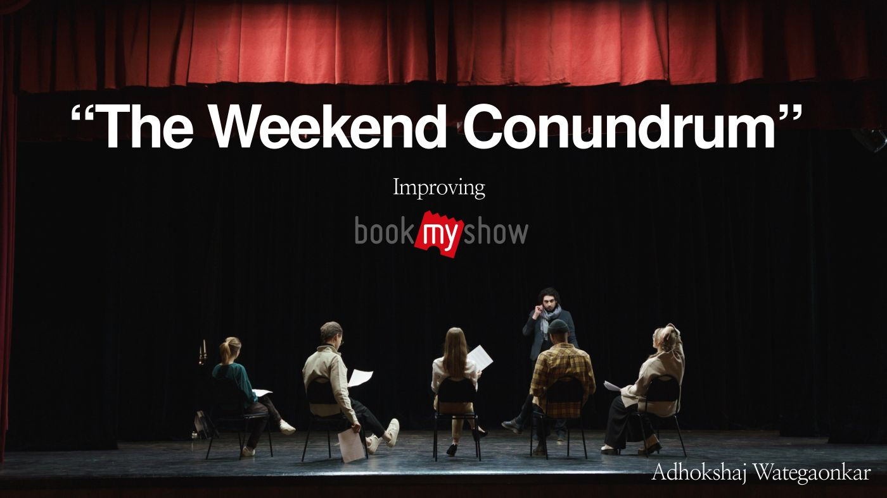

Thirty percent of a working life, unplanned
Friday 6pm to Sunday 9pm is roughly 30% of a working professional's time, and it is the portion they actually own. What happens to it is the conundrum. No plan gets made, the hours go to scrolling, and the regret arrives on Sunday evening.
Asking people why, four causes came up repeatedly. They need four different fixes:
- Don't know what to do. A passive mindset. Hasn't put thought into it, will go with the flow, ends up joining whatever friends planned.
- Don't know how to do it. Lack of awareness. Doesn't know what's happening nearby, or about the things they'd have liked if they had known.
- Don't know whom to do it with. Lack of company. Knows what they want and can't find people.
- Don't know if to do it. No clear go or no-go. No confidence in the plan, doesn't trust the organiser, ends up not acting.

Who this is for
Anant Shahi, 24, data scientist, Delhi/Gurgaon. Earns enough to spend on experiences, cares about work-life balance, and has a wide spread of interests: stand-up and concerts, photography, fitness, reading, travel, learning an instrument. The spread is the mechanism. His weekends fail from too many good options and no way to rank them.
I set the persona in a Tier 1 or Tier 2 city on purpose, because that is where events are being coordinated and where someone has both the disposable income and the appetite. A discovery product for a city with nothing happening in it is a different brief.

Weighting the causes instead of solving all four
Four causes, one product decision. I weighted them rather than treating them as equal: lack of awareness 40%, passive mindset 30%, lack of company 10%, no go/no-go 10%.
That weighting is the pivotal call. Lack of company is a real problem, and solving it means building a social layer, which is a different company. The two causes carrying 70% of the weight are the same thing underneath: the platform's discovery is not good enough to turn a vague desire into a plan. BookMyShow can fix that inside the product it already has.

Where the current journey breaks
Mapping Anant's actual path from awareness through three consideration steps to decision, the emotional curve falls apart in the middle. He opens the app wanting to plan the whole weekend. He hits paradox of choice straight away, then narrows to a timeframe, then a show, then payment.
He completes the funnel. He books a ticket. The pain point recorded at the end is the interesting one: "doesn't feel satisfied about planning a weekend." The transaction converted and the job failed, and no conversion dashboard would have shown it.

BookMyShow = helps me book. BookMyShow ≠ helps me plan.
Two concrete failures produce that. No meticulous organisation: the only weekend-shaped surface is a banner reading "Head out this Weekend", and behind it sits everything happening in the city, indoor and outdoor and online, under one heading. No advanced filtering: inside the banner the user meets choice paralysis a second time and has to hand-sort every option. Someone who came to plan a weekend books one show and leaves.
The solution: plan first, book once
Rather than adding a destination, the fix reworks the surface that already exists. The "Head out this Weekend" banner becomes a place to build a weekend:
- Day selection first. Fri, Sat, Sun, Mon, because a weekend plan is scoped in days rather than in ticket categories.
- Real filtering inside the banner, plus event-type categories so browsing is navigable instead of infinite.
- Recommendations from history and popularity, which answers the 40% cause directly.
- Events in time buckets, morning, afternoon and evening, so a day gets assembled rather than sampled.
- Add to a plan instead of booking individually, then one payment for the whole plan.
The time-bucket decision is the one I'd defend hardest. A catalogue sorted by category asks "what do you like?", which Anant can't answer. A day sorted into slots asks "what goes in Saturday evening?", which has a much smaller answer space. It turns an open-ended preference problem into a filling-in problem, and a passive user will do filling-in.


What Anant gets: several things browsed, selected and booked in one pass; an itinerary that covers a spread of interests instead of one show; the total cost of the weekend visible before committing rather than after four separate checkouts; and the lesser-known events that were never on his radar.
How you'd know it worked
The metrics split into adoption and experience. This is a feature where usage can rise while satisfaction falls, so both are needed.
| Feature adoption rate | Users who use "Plan Your Weekend" at least once, over all active users. |
|---|---|
| Conversion rate | Users who start planning and complete planning and payment. The funnel now ends at a plan rather than a ticket. |
| Repeat usage rate | Users who come back to it. The honest one: adoption measures whether the banner got noticed, repeat usage measures whether a weekend built this way beat the one before. |
| Satisfaction score | Feature-specific surveys, weighted by response volume. |
| Drop-off points | Which stage of planning gets abandoned. A diagnostic rather than a scorecard. |
The original deck
Twelve slides, as presented. Arrow keys work; click a slide to enlarge.
